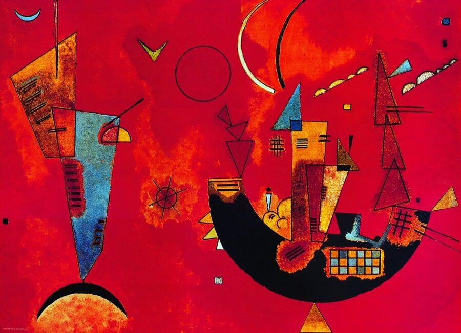

World of Red
Exploring Color Theory and Design
Red, as a primary color, is known for its passionate and energetic nature. It symbolizes love, intensity, and warmth, making it a versatile and attention-grabbing choice in color theory and design.

REDREDREDREDREDREDREDRED REDREDREDREDREDREDREDRED REDREDREDREDREDREDREDRED REDREDREDREDREDREDREDRED REDREDREDREDREDREDREDRED REDREDREDREDREDREDREDRED REDREDREDREDREDREDREDRED REDREDREDREDREDREDREDRED REDREDREDREDREDREDREDRED REDREDREDREDREDREDREDRED REDREDREDREDREDREDREDRED REDREDREDREDREDREDREDRED REDREDREDREDREDREDREDRED REDREDREDREDREDREDREDRED REDREDREDREDREDREDREDRED
The Power of Red
"The color red is a dynamic force, known for its ability to elicit intense emotions and physiological responses. It symbolizes passion, love, and energy, while its vividness makes it a powerful tool for capturing attention and conveying urgency. Exposure to red can quicken heart rates and raise blood pressure, demonstrating its capacity to evoke physical reactions. Across cultures, red carries diverse meanings, from luck and celebration to warning and excitement. This multifaceted color continues to intrigue and influence human perception and behavior."
"Red is the design world's attention-grabber, drawing eyes with its boldness and vigor. It's the go-to color for emphasis, making key elements pop. Whether used in branding, advertising, or interiors, red injects passion and energy into every project. Its universal appeal and emotional impact make it an indispensable tool for designers."
REDREDREDREDREDREDREDRED REDREDREDREDREDREDREDRED REDREDREDREDREDREDREDRED REDREDREDREDREDREDREDRED REDREDREDREDREDREDREDRED REDREDREDREDREDREDREDRED REDREDREDREDREDREDREDRED REDREDREDREDREDREDREDRED REDREDREDREDREDREDREDRED REDREDREDREDREDREDREDRED REDREDREDREDREDREDREDRED REDREDREDREDREDREDREDRED REDREDREDREDREDREDREDRED REDREDREDREDREDREDREDRED REDREDREDREDREDREDREDRED